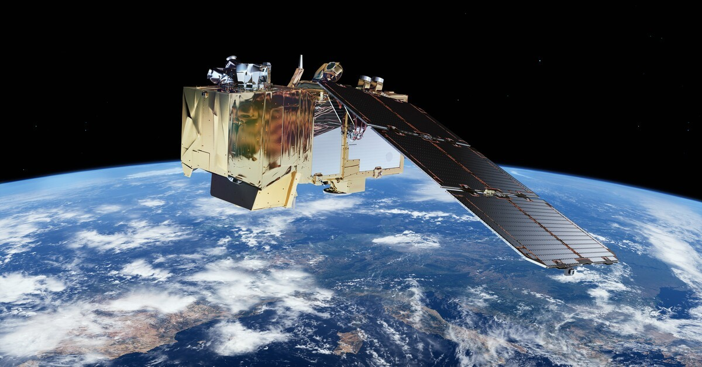

Introduction
Bush encroachment is an important land-management concern in many rangeland and agricultural areas, as changes in woody vegetation can influence the availability of grazing resources,
ecosystem functioning and the productivity of agricultural land. Although the presence of individual bushes may not necessarily indicate a problem, a gradual increase in bush density or
woody vegetation over time can alter the structure and condition of the veld. Consequently, monitoring bush encroachment is important not only for understanding the current condition of
a piece of land, but also for identifying how that condition changes over time.
Monitoring a specific area over several years provides information that cannot be obtained from a single observation. A single image or bush count provides a snapshot of the vegetation at
a particular point in time, whereas repeated observations can reveal trends in bush density, vegetation cover and spatial distribution. This makes it possible to determine whether an area
is experiencing increasing encroachment, remaining relatively stable, or responding positively to vegetation management practices. Long-term monitoring can therefore support more informed
land-management decisions and provide an objective means of evaluating changes in the condition of the veld.
Satellite-based remote sensing provides an effective approach for monitoring vegetation over large areas and across multiple years. Sentinel-2 imagery is particularly useful because it
provides regularly repeated multispectral observations that can be used to monitor changes in vegetation characteristics within a defined area of interest. By applying vegetation indices
such as the Normalized Difference Vegetation Index (NDVI), changes in vegetation activity and cover can be assessed consistently through time. However, satellite imagery generally provides
information at a spatial scale that may not capture the characteristics of individual bushes in sufficient detail.
This creates an opportunity to combine satellite-based monitoring with high-resolution imagery and automated bush-counting techniques. Satellite imagery can be used to monitor the broader
temporal changes occurring across the study area, while high-resolution imagery can provide more detailed information about individual bushes, including their number, size and spatial distribution.
Combining these approaches can provide a more comprehensive understanding of how bush encroachment develops over time.
Therefore, the objective of this monitoring approach is to establish a repeatable method for assessing changes in vegetation and bush density within a defined area over multiple years. By combining
Sentinel-2 time-series information with the bush-counting methodology developed in this project, changes in the condition of the land can be quantified and monitored rather than relying on isolated
visual observations. This provides a foundation for identifying long-term trends and supporting data-driven decisions regarding veld and land management.
Sentinel-2 Satellite Imagery
The Sentinel satellites are a fleet of Earth-observation spacecraft developed by the European Space Agency (ESA) for the European Union's Copernicus Programme. They monitor land, oceans, and
atmosphere to track environmental changes, map disasters, and support climate science. The Sentinel Fleet:
- Sentinel-1: Radar imaging for all-weather, day-and-night land and sea monitoring.
- Sentinel-2: High-resolution optical and multispectral imaging for vegetation, soil, and coastal areas.
- Sentinel-3: Marine and land measurements, including sea-surface temperature and ocean color.
- Sentinel-4 & 5: Atmospheric monitoring for air quality and climate gases from geostationary and polar orbits.
- Sentinel-6: Global sea-surface height measurements for oceanography.
For this project in particular, we are interested in Sentinel-2 imagery that is used for rangeland monitoring.

The Sentinel-2 satellite carries a multispectral instument (MSI) that captures 12 distinct spectral bands ranging from visible light to short-wave infrared, mentioned in the table below.

These spectral bands are divided into different resolution bands:
10-Meter Resolution Bands
- Band 2 (Blue - ~490 nm): Used for coastal water mapping, soil/vegetation discrimination, and basic atmospheric haze/smoke observation
- Band 3 (Green - ~560 nm): Matches the green peak of vegetation; used with red and blue for true-color images and assessing plant vigor.
- Band 4 (Red - ~665 nm): Strongly absorbed by healthy vegetation; used heavily in combination with other bands for plant health and index calculations.
- Band 8 (Near-Infrared / NIR - ~842 nm): Highly reflected by healthy green biomass; used for delineating water bodies, shorelines, and calculating indices like NDVI.
20-Meter Resolution Bands
- Band 5 (Red Edge 1 - ~705 nm): Captures the transition zone between red absorption and near-infrared reflection; vital for early detection of crop stress and chlorophyll changes.
- Band 6 (Red Edge 2 - ~740 nm): Measures the middle of the red-edge spectrum; used to track fine shifts in vegetation health and leaf area index.
- Band 7 (Red Edge 3 - ~783 nm): The highest red-edge band; helps refine biomass estimation and advanced crop monitoring.
- Band 8A (Narrow Near-Infrared - ~865 nm): A narrow NIR band less affected by atmospheric water vapor than Band 8; used for precise vegetation and atmospheric corrections.
- Band 11 (Short-Wave Infrared 1 / SWIR 1 - ~1610 nm): Sensitive to moisture content in soils and vegetation; useful for drought assessment, burn scar mapping, and distinguishing wet from dry surfaces.
- Band 12 (Short-Wave Infrared 2 / SWIR 2 - ~2190 nm): Deeply sensitive to moisture and rock/soil mineral types; highly effective for fire detection, geological mapping, and distinguishing snow/ice from clouds.
60-Meter Resolution Bands
- Band 1 (Coastal Aerosol - ~443 nm): Designed for coastal water blue-pixel analysis and atmospheric aerosol/dust correction.
- Band 9 (Water Vapor - ~945 nm): Dominated by water vapor absorption; used primarily to measure atmospheric water vapor content for image correction.
- Band 10 (Cirrus - ~1375 nm): Strongly absorbed by high-altitude cirrus clouds; used exclusively for detecting and masking thin cirrus cloud contamination.

Spectral Band Selection
The selection of spectral bands is an important component of the bush-counting and vegetation-monitoring approach, as
different wavelengths provide different information about vegetation and the surrounding landscape. For this project, **RGB,
Near-Infrared (NIR), and Short-Wave Infrared (SWIR)** information is used to capture complementary characteristics of
vegetation, soil and woody structures.
RGB - Visible Vegetation Characteristics
The **Red, Green and Blue (RGB)** bands represent the visible portion of the electromagnetic spectrum and provide
information similar to what is observed by the human eye. These bands are particularly useful for distinguishing vegetation
from exposed soil and other background features based on differences in colour and brightness.
For the bush-counting component of the project, RGB information is useful for identifying the visible structure and
boundaries of individual bushes, particularly when high-resolution imagery is available. It can also provide information
about differences between green vegetation, dry vegetation, soil and other surface features. The RGB bands therefore
provide an intuitive representation of the landscape and form an important basis for identifying and characterising
individual bush objects.
NIR - Vegetation Structure and Health
The **Near-Infrared (NIR)** region provides information that is particularly valuable for vegetation analysis. Healthy green
vegetation strongly reflects NIR radiation because of the internal structure of plant leaves, while vegetation with different
levels of stress, senescence or moisture can exhibit different spectral responses.
NIR is therefore useful for separating vegetation from non-vegetated surfaces and for assessing differences in vegetation
condition. In this project, NIR can complement the RGB information by providing an additional means of distinguishing
vegetation from soil and identifying areas with greater or lower vegetation activity. It also forms the basis of widely
used vegetation indices, such as the **Normalized Difference Vegetation Index (NDVI)**, which can be used to monitor changes
in vegetation conditions over time.
SWIR - Moisture and Vegetation Condition
The **Short-Wave Infrared (SWIR)** region provides information that is complementary to both visible and NIR wavelengths.
SWIR reflectance is strongly influenced by the water content of vegetation and soil, making it useful for distinguishing
surfaces with different moisture characteristics.
This is particularly relevant in rangeland environments, where vegetation condition can vary substantially according to
rainfall, season and moisture availability. SWIR can help distinguish vegetation from dry soil and other background surfaces
and can provide additional information about vegetation stress and moisture conditions. Including SWIR therefore allows the
project to capture characteristics of the landscape that may not be apparent from RGB or NIR information alone.
Why Combine the Bands?
The main advantage of combining **RGB, NIR and SWIR** is that each spectral region provides different information about the
landscape. RGB describes the visible appearance and structure of vegetation, NIR provides strong information about vegetation
presence and condition, while SWIR contributes information related to vegetation and soil moisture.
Together, these spectral regions provide a more comprehensive representation of the landscape than any individual band
could provide on its own. This is particularly important for bush monitoring, where the objective is not simply to identify
vegetation, but to distinguish bushes from surrounding vegetation and soil and to monitor how these characteristics change
over time.
By combining spectral information with spatial image analysis and the bush-counting methodology developed in this project,
the aim is to develop a more robust approach for identifying and monitoring woody vegetation. The combination of **visible,
NIR and SWIR information** can therefore support both the identification of individual bushes and the longer-term assessment
of vegetation and bush encroachment across the study area.
Why NIR and SWIR Are Useful for Plant Classification
Plants interact with electromagnetic radiation differently from soil,
rocks and other land-cover types. While visible RGB imagery captures
differences in colour, Near-Infrared (NIR) and
Short-Wave Infrared (SWIR) provide additional
information about the internal structure and physical properties of
vegetation. This makes these spectral regions particularly useful for
recognising and classifying plants.
Near-Infrared (NIR)
Healthy vegetation absorbs a large proportion of visible red light
because of chlorophyll, which is required for photosynthesis. However,
vegetation strongly reflects NIR radiation. This high
NIR reflectance is largely caused by the internal structure of plant
leaves, where the cellular structure scatters incoming NIR radiation.
As a result, vegetation generally has a very different spectral
response in the NIR region compared with soil, water and many other
land-cover types. This difference makes NIR particularly effective for
separating vegetation from non-vegetated surfaces.
NIR can also provide information about vegetation structure and
condition. Differences in leaf density, canopy structure and vegetation
health can result in differences in NIR reflectance. This makes NIR
useful not only for identifying vegetation, but also for distinguishing
areas with different vegetation characteristics.
In this project:
NIR provides information that helps distinguish bushes and other
vegetation from surrounding soil and non-vegetated surfaces, while
also providing information about vegetation structure and condition.
Short-Wave Infrared (SWIR)
SWIR provides a different type of information from NIR. Reflectance in
the SWIR region is strongly influenced by the water content
of vegetation and soil, as well as the chemical and structural
characteristics of plant material.
Water absorbs specific wavelengths of SWIR radiation. Consequently,
vegetation containing different amounts of water can produce different
SWIR reflectance responses. Healthy, moist vegetation can therefore
have a different spectral signature from dry or stressed vegetation.
SWIR is also useful for distinguishing vegetation from dry soil and
other background surfaces. This is particularly important in
rangeland environments, where green vegetation, dry grass, woody
vegetation and exposed soil may occur next to one another and can
sometimes appear similar in visible imagery.
In this project:
SWIR provides additional information about vegetation moisture and
condition, helping to distinguish vegetation types and vegetation
from surrounding soil and dry material.
Why Combine NIR and SWIR?
NIR and SWIR are valuable because they describe different physical
characteristics of vegetation. NIR is particularly sensitive
to leaf and canopy structure, while SWIR is strongly
influenced by vegetation water content and plant material
characteristics.
Combining these spectral regions therefore provides a more complete
representation of vegetation than using visible RGB information alone.
Two surfaces that have similar colours in an RGB image may have very
different NIR or SWIR responses, allowing them to be separated during
classification.
For the bush-counting project, this combination is particularly useful
because the objective is not simply to identify something that appears
green. The aim is to distinguish woody vegetation, other
vegetation and background surfaces using their different
spectral characteristics. By combining RGB, NIR and SWIR information,
the classification can use both the visible appearance of vegetation
and its underlying physical and structural properties.